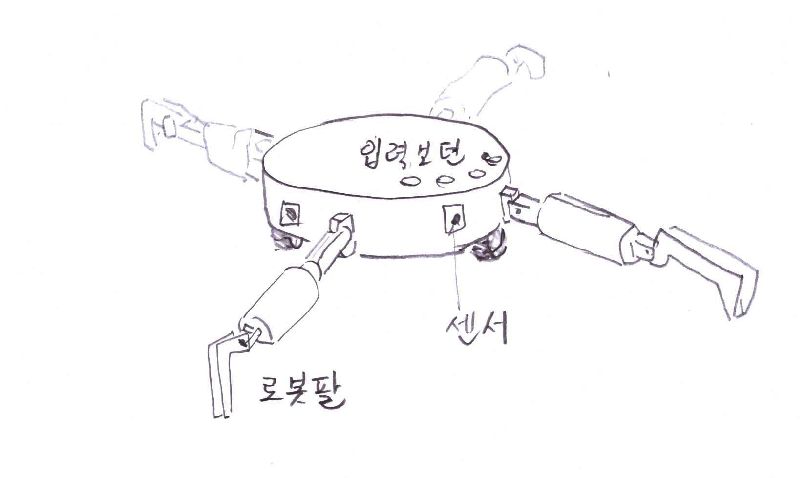

『풀 뽑는 로봇』이 필요합니다.
농촌에 사는 사람이면 기술을 배우러, 정보를 알려고 혹은 EM 등을 수령하는 등 여러 가지 일로 농업기술센터에 많이 방문하게 되고
그때 마다 만나는 농민들, 귀농인들, 젊은 농업후계자들과 농촌의 어려움은 물론 노력에 비해 소득이 적은 힘든 농사일에 대해서 의견을 주고받을 기회가 많아집니다.
저도 어찌 보면 어려서는 집에 농사를 도와주었으나 도시에서 공직생활을 마치고 형제들과 산골에 땅을 구해 텃밭처럼 농사를 짓고 있으니 천상 농부라 할 수 있고 그래서 인지 농사의 어려움을 잘 알고 있습니다.
며칠 전 KBS 라디오에서 “로봇이 있으면 어떤 로봇이 필요하신지? 문자를 주면 소개”해 주는 프로가 있었습니다.
재미있는 로봇을 많은 사람들이 요구 하더라구요.
“비서로봇이 있었으면 좋겠다.”
“반려동물을 케어해 주는 로봇이 있으면 좋겠다.” 등 과학문명의 혜택이 사치스러운? 쪽으로 바라는 것 같아 약간은 서럽고 울컥 했습니다.
지금 농촌에서 『풀 뽑는 로봇』이 절실한데, 농민들은 생각은 있어도 문자를 보내는 상황이 낯설고 해서 보내지 않는 것 같기에 운행하던 자동차를 멈추고 문자를 보냈습니다.
“많은 분들이 소망을 말하지만 현실성 있고 시장성도 있는 것을 건의합니다. 지금 농촌에서 절대적으로 필요한 것은 『풀 뽑는 로봇』일 것입니다.
어찌보면 농사는 풀과의 전쟁이라고 할 수 있습니다.
어렵게 농사지으시는 어르신들이 농촌의 현장에서 필요한 것이오니 꼭 만들어 졌으면 합니다.
예컨대, 로봇에 뽓지 말아야 할 작물을 입력하고 구역을 설정해 주면 풀 등 불필요한 잡초를 제거해 주는 로봇이 절대 필요합니다.”
그러나 불행하게도 시간이 없어서인지 방송에 나오지 않았습니다.
그렇습니다.
AI, 로봇, 드론, IOT, 3D프린팅, 블럭체인 등 4차 산업혁명 시대입니다.
그런데도 누구하나 농촌의 현장에서 실제 필요한 『풀 뽑는 로봇』은 생각하지도 않고 있습니다.
그래서 다음과 같은 것을 고민해 보았다고 농업기술센터의 직원들과 농업인들에게 호소하였더니 그 반응이 격하게 뜨거웠고 여러 조언을 해주었으며 요즘 뜨는 청와대 청원게시판에 올려야 한다고 응원을 해주었습니다.
농촌을 지키며 풀과 싸우는 어르신들을 도울 수 있고 현장에서 건의되는 것이니 정부차원에서 고민하여 주시기 바랍니다.
1. 『풀 뽑는 로봇』은 사람모양은 아닐 것입니다.
이앙기의 반대 개념인 역발상으로 구상해 보겠습니다.
이앙기는 모판에 있는 모를 식부장치가 집어서 논에 심는 것이지만 반대로 『풀 뽑는 로봇』은 논밭에 있는 불필요한 풀을 식부장치 그러니까 로봇팔이 뽑아서 버린다고 생각하시면 되겠습니다.
그러나 이앙기의 식부장치는 기계식이지만 여러 가지로 방법을 찾아 볼 수 있습니다.
예를 들어 로봇이 불필요한 잡초를 찾아 제초주사를 하는 방법
불필요한 잡초를 레이저로 태우는 방법, 근적외선을 이용해 제거하는 방법,혹은 적외선 자외선 자기장 등의 빛을 투광(일정한 양의 빛 혹은 전파 음파 등을 쏘이는)하는 방법,
최근에는 초음파에 대해 많이 고민 해 보았습니다.
어느 병원에선가 신장내에 결석을 수술없이 깨는 시물레이션을 본적이 있으며 우리가 흔히 물리치료를 받을 때 초음파 치료기를 10초만 한곳에 대고 있어도 뼈를 부수는 통증을 느껴 본적이 있을 것입니다. 이를 로봇에 적용해 보는 것입니다.
초음파 활용관련 잔디관리에 응용해 보겠습니다.
잔디는 지표에서 뿌리가 10센티 이내에서만 자랄 때
로봇에 “지표에서 10센티 이하의 뿌리는 다 투광하세요”라고 입력하면 뿌리가 깊은 크로바, 엉겅퀴 등 잡풀을 제거할 수 있습니다.
역으로 “지표에서 10센티 이상의 풀은 모두 투광하세요(자르세요)”
조금더 심도 있게 응용하면
최근 스마트 폰으로 고추, 토마토 등 작물이나 야생화 등 잡풀을 사진을 찍어 입력하면 어느 식물인지 알려주는 어플리케이션이 있습니다. 이를 반대 개념으로 로봇에 “고추이외는 다 제거해” 라고 입력하면 고추외의 잡풀에 레이저 혹은 적외선 등 초음파를 투광해 말린다든가 아니면 잘라버린다든가 하는 개념을 응용해 볼 수 있습니다
< 그림 1 >

⓵ 로봇은 앞뒤로 로봇팔은 좌우로 움직이며 잡초제거형
< 그림 2 >
⓵ 로봇 청소기 모양으로 작물의 사이사이에 있는 잡초제거 형
2. 환경에도 크게 기여합니다.
저는 공직 재직시설 환경관련 컴퓨터 프로그램의 특허를 획득한바 있고 이를 제품을 만들어 보급한바 있습니다.
지금 농촌은 풀과의 전쟁이 싫어서 멀칭이나 부직포를 활용하는 것을 아시는 지요?
중요한 것은 사용한 비닐 멀칭이나 부직포가 연간 수십만톤이 소비되고 있으나 수거율은 50%도 안되는 실정으로 토양을 오염시키고 농촌 환경을 저해하고 있습니다.
물론 정부나 지방자치단체에서 비닐을 수거하고 있습니다만
여러시간 동안 땀 흘리고 먼지 마셔가면서 부직포를 걷어 수거하는 곳에 가져다주면 겨우 몇 천원을 보상을 해주니 인건비는커녕 운임비도 안나오니 누가 수거 하겠습니까?
도시 쓰레기는 90% 이상 분리수거 되고 있지만
농촌 쓰레기는 많은 양이 수거되지 못하고 있는 것이 현실이며 환경오염으로 문젯거리가 된다는 것을 실토하는 바입니다.
그러나 『풀 뽑는 로봇』이 있다면 멀칭이나 부직포 등은 필요 없을 것입니다.
3. 물론 제초제도 있고 예초기도 있습니다.
인류는 농사를 위해 손으로 잡초를 제거 했을 것이고
이후 호미나 낫 등을 사용했으며 제초제를 연구하여 사용하는가 하면 최근에는 각종 예초기가 사용되고 있으며 풀이 난 땅을 갈아엎기 위해 관리기 트렉터 등을 사용하고 있습니다.
제초제의 환경오염은 그렇다 치고 아시다 시피 예초기를 가지고 작업을 해 보셨나요?
무게와 소음도 만만치 않지만 원동기의 매연과 환경오염을 물론 위험성도 많이 내포되어 있고 뜨거운 여름에 농민들과 어르신들이 예초기 작업을 하기는 쉬운 일이 절대 아닙니다. 그러나 농사를 위해 예초작업 즉 풀과의 전쟁을 하지 않을 수 없는 것이 현실입니다.
제초를 위한 도구들이 위와 같이 발전해 왔듯이 이제 또 한단계의 성장!
『풀 뽑는 로봇』을 고민할 때입니다.
4. 안전 및 환경과 생태계에 지장이 없어야 합니다.
레이저의 빛, 자기장, 혹은 초음파 등의 투과량이 환경 및 생태계에 저해가 없어야 하고 특히 인체에 피해가 없는 최소한의 양이여야 하며 혹여, 잡초를 제거하기 위해 기준에 초과 되어야 할 때 손 발 등 신체의 일부가 주사의 범위에 들어가면 작동이 멈춰지도록 설계가 되어야 할 것입니다.
※ X레이, CT, MRI, 근적외선 팔지 등 인체에 무해하도록 투과율 최소화 적용
5. 전문가의 협치가 필요하며 정부차원에서 추진되어야 할 것입니다.
로봇전문가, 농기계전문가, 식물학전문가, 레이저 혹은 자기장, 초음파 전문가 등 협업이 필요하고
현장에서의 적응 등 적어도 2년 이상의 기간이 소요 될 것으로 판단 되며, 초기 개발비도 전문가 단위별로 팀을 구성하는 등 수십억이 소요 될 것입니다. 그래서 정부차원(농림부 혹은 농진청)에서 추진되어야 할 것입니다.
지방차치단체 혹은 농협에서 수십억원의 예산을 편성하기도 어렵지만 각분야의 전문가를 모집 통섭과 통제하기도 쉬운 여건이 아닙니다.
초기 개발비가 만만치 않지만 이를 통해 상용 될 수 있는 다양한 제품이 나오고 그 가격이 3백만원선?(청소기도 백만원 임, 물론 대용량이면 가격이 오르겠지만) 이면 얼마든지 시장성도 있을 것입니다.
6. 경진대회를 추진하는 방안도 있습니다.
『풀 뽑는 로봇』 관련 일정한 사양을 주고 상금을 수여하는 경진대회 혹은 품평회 등을 개최하여 로봇업체, 농기계업체, 전자제품 업체, 레이저나 초음파 업체 등 여러 업체가 참여 할 수 있도록 하는 방안도 있을 것입니다. 물론 상금이 많을수록 우수한 제품들이 참가 하겠지요. 여기서 발탁된 최우수제품, 우수제품, 장려제품 등을 선별하여 보급화 할 수 있는 지원 등 여건을 마련해 주고 농민에게 저렴한 가격으로 공급하는 정책도 구상 할 수 있습니다.
7. 에필로그
쓰다 보니 “과업 지시서”가 되었네요.
구체적으로 고민하다 보니 그랬다고 이해해 주시고
중요한 것은 농민과 농촌과 농업을 사랑하는 마음에서 그리고 『현장에서 많은 분들과 논의하고 건의』 되는 것이오니 깊이 고민해 주시기 바랍니다.
농촌현장도 차별화가 심합니다.
누구는 몇천만원 혹은 몇억씩 보조받아 시설하우스 짓고 공장 짓고 하는 데 정치력?이 없는 순진한 농민들, 제도를 모르는 나이 많으신 어르신들, 귀농귀촌한 분들은 1원하나 혜택을 보고 있지 않습니다.
저렴한 『풀 뽑는 로봇』을 만들어 보급하는 것이야 말로 모든 분들한테 고른 혜택을 주는 최고의 정책일 것입니다.
만화영화에서 보던 것이 이루어지는 4차 산업혁명의 시대!
모든 국민의 『마음에 고향 농촌』
도시에 사는 어린손주가 리모콘으로 『로봇』을 조정하면서 잡초를 제거는 등 어르신과 소통하는 농촌!
그리고 『잔디밭이 펼쳐진 그림 같은 전원!』 감동적이지 않습니까?
꿈은 이루어 집니다, 이제 농촌에 주목해야 할 때입니다.